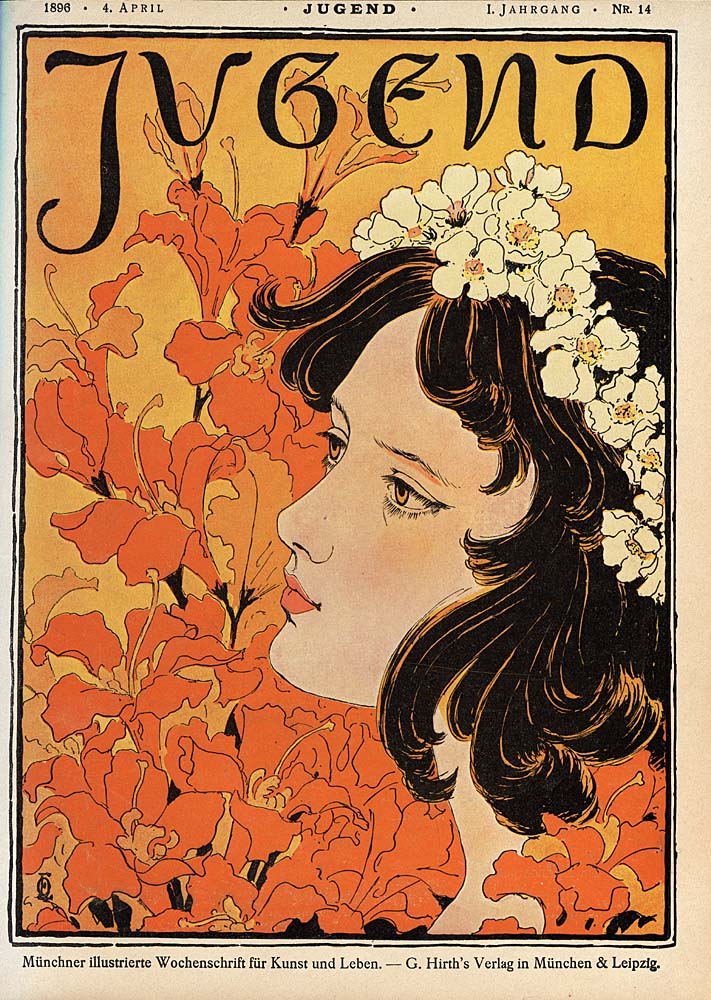
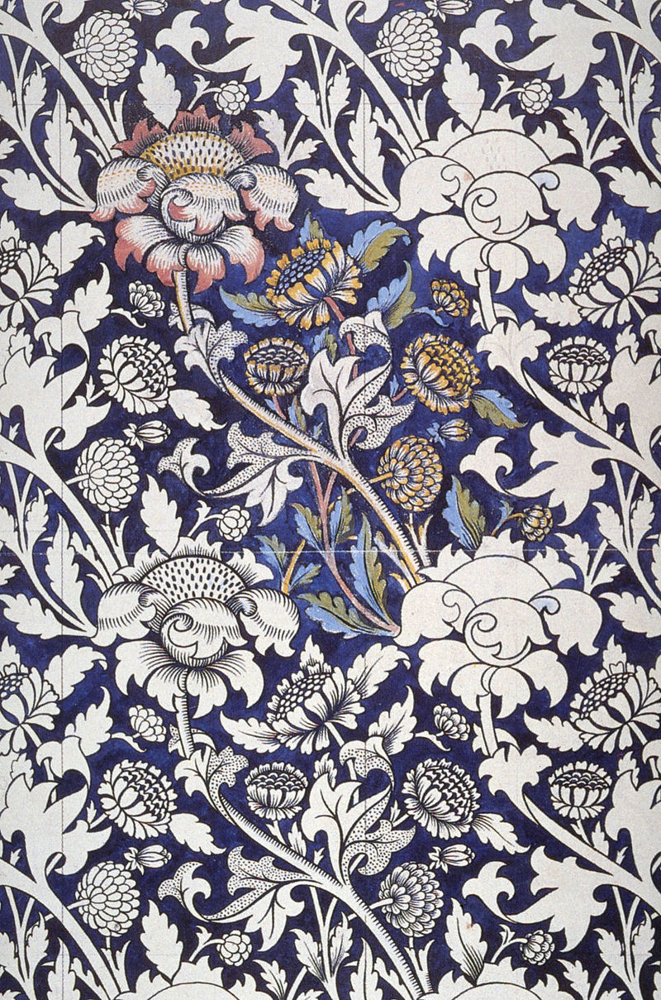

 El Art Nouveau es un estilo internacional de arte, arquitectura y artes aplicadas, especialmente las artes decorativas.. A menudo se inspiraba en formas naturales, como las curvas sinuosas de plantas y flores. Otras características del Art Nouveau eran el dinamismo y el movimiento. de dinamismo y movimiento, a menudo dado por la asimetría o las líneas latigazo, y el uso de materiales modernos, en particular el hierro, el vidrio, la cerámica y, más tarde, el hormigón, para crear formas inusuales y espacios abiertos más amplios. formas inusuales y espacios abiertos más amplios. Fue popular entre 1890 y 1910, durante la Belle Époque, y fue una reacción contra el academicismo, el eclecticismo y el historicismo de la arquitectura y el arte decorativo del siglo XIX.
"Se valora lo artesanal aunque sin renunciar a los avances industriales, y se repira una aspiración de democratizar la belleza o socializar el arte.
Para ello se potenció la idea de que hasta los objetos más cotidianos deben tener un valor estético, además de ser accesibles a toda la población.
Por eso empiezan a hacerse visibles todo tipo de objetos útiles en la vida cotidiana, incluido el mobiliario urbano, que pasó a tener gran importancia
(kioscos, estaciones de metro, farolas, papeleras, urinarios…).
Desaparece así la jerarquía de artes mayores y menores. Tiene el mismo valor un edificio que una joya, un cartel que un cuadro. De hecho,
los propios artistas realizan los marcos para sus cuadros, los arquitectos diseñan también los muebles."